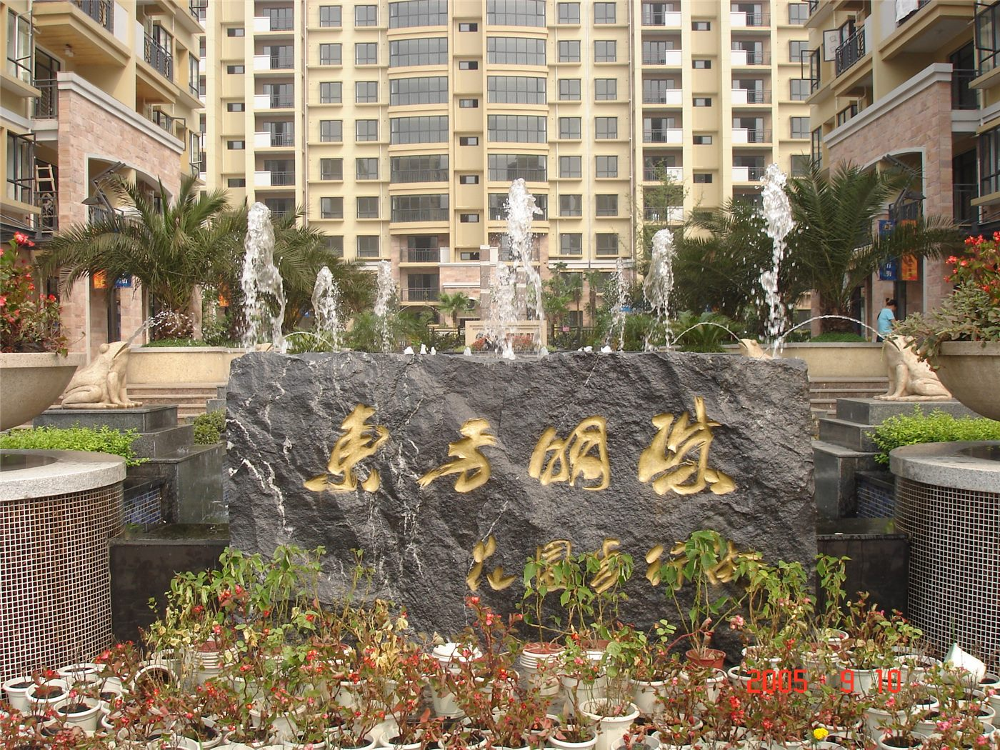

‘낡은 동네의 행복한 변신’… 노후 단지 개선으로 주거 환경 정비
중국 각지에서 낡은 주거 단지를 정비하는 사업이 진행되고 있다. 노후 단지의 환경 개선이 주민 생활에 변화를 가져오고 있다.
전홍발 기자 · 2026.07.19
橋중국

환구망은 노후 주거 단지를 개선해 주거 환경을 정비하는 사례를 소개했다. 오래된 아파트 단지의 시설을 보수하고 편의를 더하는 과정이 ‘행복한 변신’으로 조명됐다.
광고 문의 · 300×250노후 주거지 정비는 배관·엘리베이터·주차 등 생활 밀착형 시설을 개선하는 데 초점을 둔다. 오래된 단지일수록 안전과 편의 측면에서 개선 수요가 크다.
이러한 정비는 대규모 재건축과 달리 기존 단지를 유지하며 환경을 개선하는 방식이다. 주민의 생활 기반을 크게 흔들지 않으면서 거주 여건을 높인다는 장점이 있다.
생활 환경 개선은 주민의 만족도와 지역 공동체의 활력에 직접 영향을 미친다. 물리적 시설뿐 아니라 공동 공간과 녹지 확충도 함께 고려되는 추세다.
華橋時報는 사람이 사는 공간을 더 살기 좋게 만드는 노력에 주목한다. 오래된 동네에 새 숨을 불어넣는 일은 국경을 떠나 모든 도시가 마주한 공통의 과제다.
출처·참고 (사실 확인용 — 본문은 직접 재작성)
· 환구망
· 환구망